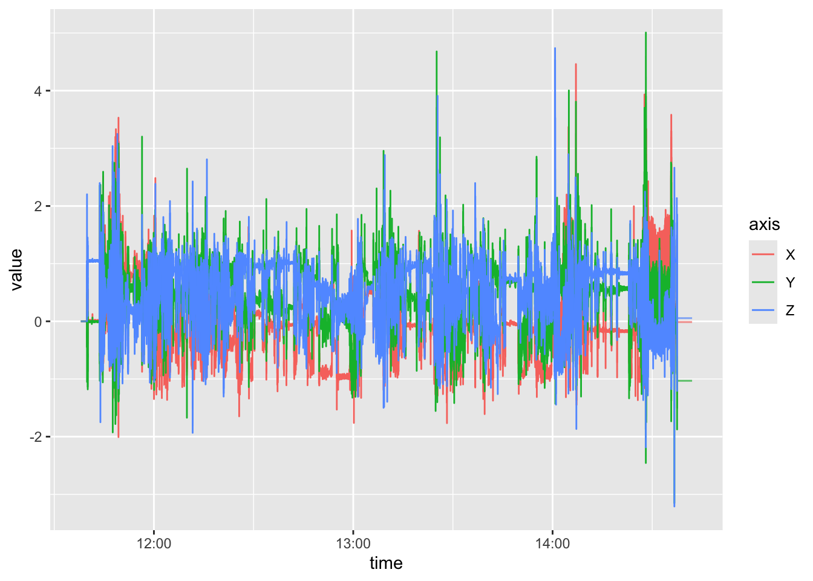
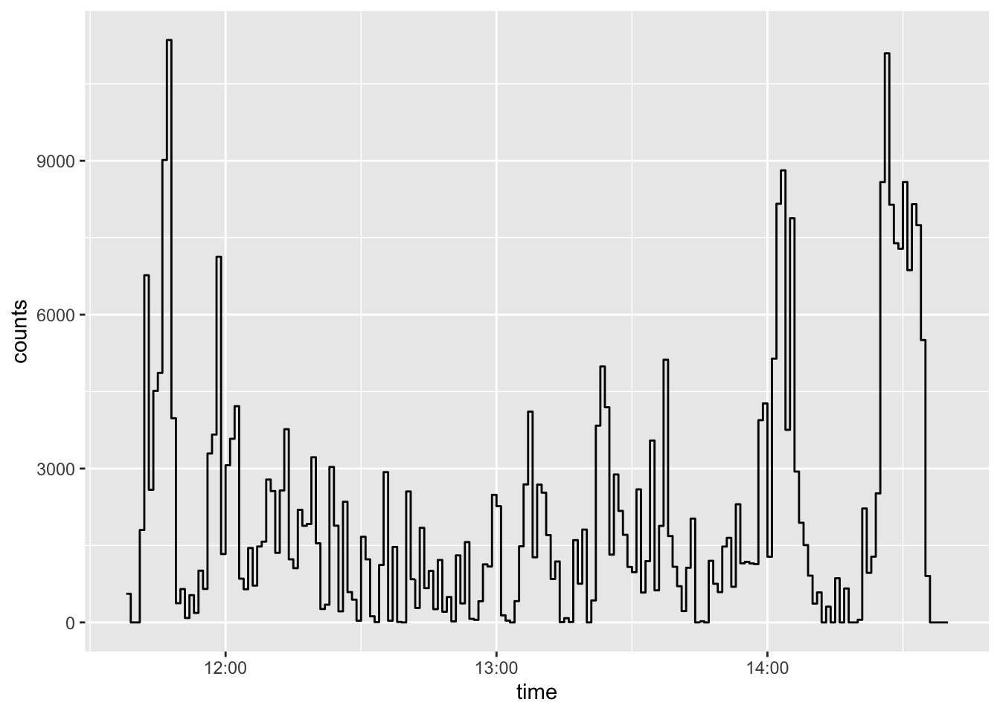
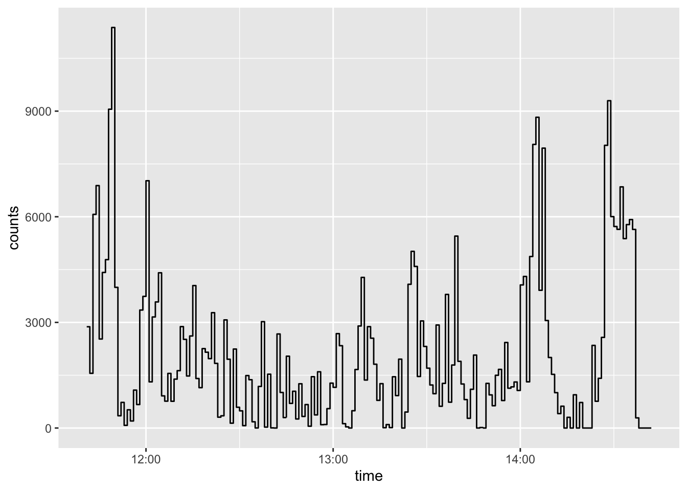
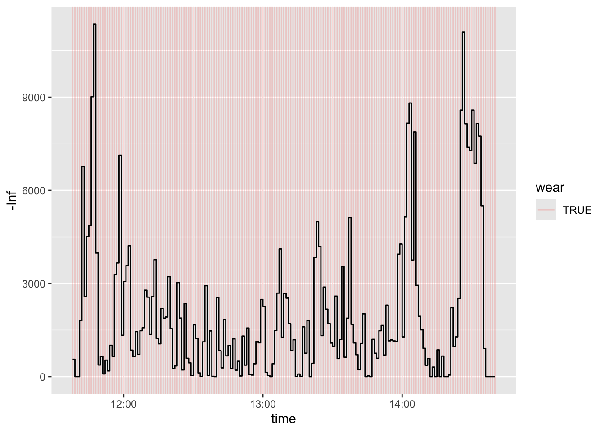
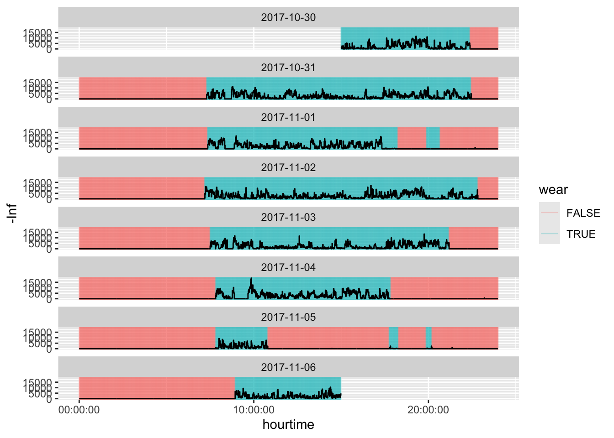

data_gt3x = acti_read_gt3x(file_gt3x)Module 2: Reading and Processing Data
Materials
Materials are at: https://github.com/jhuwit/wearabler
Can use git clone or download via: https://github.com/jhuwit/wearabler/archive/refs/heads/main.zip
Loading targets and environment
Using renv allows us to specify the packages used to build this pipeline:
The targets pipeline located in the GitHub repo will do the processing (and allows us to cache the pipeline).
Data: Personal Recording (from John)
TAS1H30182791 (2026-04-29).gt3x- wore GT9X device114890_0000000000.cwa- wore AX3 deviceAI15_MOS2D09170398_2017-10-30.gt3x- 7 days of data from (Chadwell et al. 2019)
Pipeline Overview
Pipeline Overview
Read in Data (also acti_read_cwa):
Create minute level summaries, including wear inclusion criteria
counts_and_wear = acti_process(data_gt3x, method = "choi")
counts_and_wear = add_day_inclusion(counts_and_wear, min_required = 1368L)Pipeline Overview
Keep days with minimum wear time, calculate day-level summaries
daily = counts_and_wear |>
filter(is_included) |>
group_by(date) |>
summarise(
total_counts = sum(counts, na.rm = TRUE),
total_counts_log10 = sum(counts_log10, na.rm = TRUE)
) |>
ungroup()Pipeline Overview
Keep participants with minimum number of days observed, create “average” day activity:
# all_daily = dplyr::bind_rows(daily_1, daily_2, ...)
daily |>
# usually group_by(id)
mutate(n_days = n_distinct(date)) |>
filter(n_days >= 3) |>
summarise(
total_counts = mean(total_counts),
total_counts_log10 = mean(total_counts_log10)
)Pipeline Overview
Statistics!
Reading in the Data
library(actiread)
file_gt3x = here::here("data/TAS1H30182791 (2026-04-29).gt3x")
file_cwa = here::here("data/114890_0000000000.cwa")
data_gt3x = actiread::acti_read_gt3x(file_gt3x)
data_cwa = actiread::acti_read_cwa(file_cwa)
head(data_gt3x, n = 3)
head(data_cwa, n = 3)# A tibble: 3 × 4
time X Y Z
<dttm> <dbl> <dbl> <dbl>
1 2026-04-29 11:38:00.000 0 0 0
2 2026-04-29 11:38:00.019 0 0 0
3 2026-04-29 11:38:00.039 0 0 0# A tibble: 3 × 7
time x y z temp battery light
<dttm> <dbl> <dbl> <dbl> <dbl> <dbl> <dbl>
1 2026-04-29 11:41:18.521 -0.188 0.0938 -0.984 27.3 0 188
2 2026-04-29 11:41:18.541 -0.127 0.0482 -1.08 27.3 0 188
3 2026-04-29 11:41:18.561 -0.155 0.0174 -1.06 27.3 0 188Reading CWA files
Different implementations of reading in the data * we recommend acti_py_read_cwa (closer to OMGUI)
# uses actipy implementation not `GGIR:readAxivity`
data_cwa_py = actiread::acti_py_read_cwa(file_cwa)
head(data_cwa, n = 3)
head(data_cwa_py, n = 3)# A tibble: 3 × 7
time x y z temp battery light
<dttm> <dbl> <dbl> <dbl> <dbl> <dbl> <dbl>
1 2026-04-29 11:41:18.521 -0.188 0.0938 -0.984 27.3 0 188
2 2026-04-29 11:41:18.541 -0.127 0.0482 -1.08 27.3 0 188
3 2026-04-29 11:41:18.561 -0.155 0.0174 -1.06 27.3 0 188# A tibble: 3 × 6
time x y z temperature light
<dttm> <dbl> <dbl> <dbl> <dbl> <dbl>
1 2026-04-29 11:41:18.519 -0.188 0.0938 -0.984 19.1 3.56
2 2026-04-29 11:41:18.539 -0.125 0.0469 -1.08 19.1 3.56
3 2026-04-29 11:41:18.559 -0.156 0.0156 -1.06 19.1 3.56Summary
- Use
actiread::acti_py_read_cwafor CWA - Use
actiread::acti_read_gt3xfor GT3X - We will show small and large example GT3X data
Core Representation
Core raw accelerometry is time series 3 axes:
| Column | Meaning |
|---|---|
time |
A datetime timestamp identifying when the sample was recorded |
x,X |
Acceleration along the device x axis |
y,Y |
Acceleration along the device y axis |
z,Z |
Acceleration along the device z axis |
Data Attributes
- Sample rate - sampling frequency in Hz:
get_sample_rate - Dynamic accelerometry range in
g:get_dynamic_range
get_sample_rate(data_gt3x)[1] 50attr(data_gt3x, "sample_rate")[1] 50get_sample_rate(data_cwa)[1] 50get_dynamic_range(data_gt3x)[1] -8 8get_dynamic_range(data_cwa)[1] -8 8names(attributes(data_gt3x)) [1] "row.names" "subject_name" "time_zone" "missingness"
[5] "old_version" "firmware" "last_sample_time" "serial_prefix"
[9] "sample_rate" "acceleration_min" "acceleration_max" "header"
[13] "start_time" "stop_time" "total_records" "bad_samples"
[17] "features" "transformations" "names" "class" Data Header from GT9X Device
attr(data_gt3x, "header")$`Serial Number`
[1] "TAS1H30182791"
$`Device Type`
[1] "Link"
$Firmware
[1] "1.7.2"
$`Battery Voltage`
[1] "4.13"
$`Sample Rate`
[1] 50
$`Start Date`
[1] "2026-04-29 11:38:00 GMT"
$`Stop Date`
[1] "0001-01-01 GMT"
$`Last Sample Time`
[1] "2026-04-29 14:41:59 GMT"
$TimeZone
[1] "-04:00:00"
$`Download Date`
[1] "2026-04-29 14:41:59 GMT"
$`Board Revision`
[1] "8"
$`Unexpected Resets`
[1] "0"
$`Acceleration Scale`
[1] 256
$`Acceleration Min`
[1] "-8.0"
$`Acceleration Max`
[1] "8.0"
$Sex
[1] "Male"
$Limb
[1] "Wrist"
$Side
[1] "Left"
$Dominance
[1] "Non-Dominant"
$`Subject Name`
[1] "John"
$`Serial Prefix`
[1] "TAS"
$sample_rate
[1] 50
attr(,"class")
[1] "gt3x_info" "list" Data Header from AX3 Device
attr(data_cwa, "header")$uniqueSerialCode
[1] 114890
$frequency
[1] 50
$start
[1] "2026-04-29 11:41:18.521 UTC"
$device
[1] "Axivity"
$firmwareVersion
[1] 48
$blocks
[1] 4423
$accrange
[1] 8
$hardwareType
[1] "AX3"
$blockLength
[1] 120
$acceleration_min
[1] "-8"
$acceleration_max
[1] "8"
$sample_rate
[1] 50Timestamps Need Their Own QC
Timestamp: use its timezone, precision, regularity, and gaps determine day boundaries, sleep windows, wear-time intervals, and the validity of all downstream summaries.
Sub-second algorithms depend on fractional seconds. Display enough precision to see them (for example,
options(digits.secs = 3)) and check observed intervals rather than assuming that every nominal 80 Hz file is exactly 80 Hz at every timestamp.Rounding milliseconds during a CSV export can corrupt joins, inferred sampling rates, resampling, and step algorithms.
Timestamps Need Their Own QC
Use an explicit timezone.
UTC avoids daylight-saving discontinuities during processing
Local time is often needed for sleep windows, diary linkage, and calendar-day summaries.
Record the original timezone, the analysis timezone, and every conversion between them.
Verify the timezone, sampling frequency, acceleration units, start and end times, duplicate timestamps, and gaps. Preserve the original file and keep import metadata with the derived table.
anyDuplicated(data_gt3x$time)[1] 0anyDuplicated(data_cwa$time)[1] 0Plot raw data
acti_tidy_axeswill reshape the time/XYZ data to a long format for plotting
long = data_gt3x |> acti_tidy_axes()
head(long, n = 3)# A tibble: 3 × 3
time axis value
<dttm> <chr> <dbl>
1 2026-04-29 11:38:00.000 X 0
2 2026-04-29 11:38:00.019 X 0
3 2026-04-29 11:38:00.039 X 0long |> count(axis)# A tibble: 3 × 2
axis n
<chr> <int>
1 X 551950
2 Y 551950
3 Z 551950Plot raw data
long |>
ggplot(aes(x = time, y = value, colour = axis)) + geom_step()
If you plot less with more data, something is going in the wrong direction
- Karl Broman
Plotting raw data - big
But the if the data is > 7 days with 80Hz,
7 days * 24 hours/day * 60 minutes/hour * 60 seconds/minute * 80 samples/second
[1] 48384000A lot of Points!
Plotting
- Many times plot at a minute level
- Get time limits for checking
- Zoom in raw data at certain intervals
QC: Check for odd things
- Zeroes
- Flat data
- Really high values
Idle sleep mode - 0s/missing
Idle sleep mode - battery saving option when enabling and setting up ActiGraph devices.
Stops recording after no movement after while
It’s a hassle, don’t use it unless you have to.
It causes “gaps” in the GT3X file that are truly missing, but this is an issue with many processing methods (gaps), so you can “impute” zeroes into the data set, which aren’t correct either.
How long is not wearing/zero
Question:
- How long is low/no activity actually someone not wearing the device?
Non-wear Estimation
In a nutshell:
- define threshold for no activity
- define time threshold for how long it lasts (e.g. 90 minutes)
- do you allow for any “spikes”?
Non-wear Estimation
- (Hees et al. 2011): Non-wear is a 30-min non-overlapping raw-acceleration window with SD <3 mg or range <50 mg in at least 2 of 3 axes.
- (Van Hees et al. 2013): now 60-min rolling window w/15-min steps, 00:00–01:00, then 00:15–01:15
- (Choi et al. 2011): Classifies ≥90 minutes of zero activity counts, allowing brief interruptions, as non-wear.
- (Troiano et al. 2008): Defines non-wear as ≥60 consecutive zero-count minutes, permitting short low-count interruptions.
What about GGIR
- Very popular
- Has changed/added a number of algorithms over the years
- Good: state of the art, bad: some reproducibility concerns over time
- Want something more modular
- GGIR creates a “buffet” of activity measures
- A lot of python modules have made considerable contributions
- Used in underlying functions, but not main GGIR runner
Gravity Correction/Calibration
Gravity correction (Hees et al. 2014) or gravity calibration: try to correct data that is miscalibrated - estimates scale and shift parameters fitting to unit sphere
Note: Not all pipelines employ this, including a number of pipelines for ActiGraph data.
Gravity Calibration: Steps
- Read the original tri-axial
X,Y, andZacceleration; do not use imputed zeroes. - Find short stationary windows (for example, 10 seconds with low SD on all three axes).
- Use the stationary vectors to estimate each axis’s offset and scale so their vector magnitude lies on the unit sphere.
- Apply the estimated offset and scale to every raw sample, then calculate metrics such as ENMO or activity counts from the corrected signal.
- Record the calibration parameters and inspect the before/after gravity error; flag a file when there are too few eligible stationary windows.
Gravity Calibration: Steps
GGIR::g.calibrate()agcounts::agcalibrateacti_calibrate- usesagcounts::agcalibrate
data_calibrated = acti_calibrate(data)Filling ZerosRunning agcounts::agcalibrateWarning in gcalibrateC(dataset = as.matrix(raw[, c("X", "Y", "Z")]), sf = sf, :
subscript out of bounds (index 4320 >= vector size 4320)
Warning in gcalibrateC(dataset = as.matrix(raw[, c("X", "Y", "Z")]), sf = sf, :
subscript out of bounds (index 4320 >= vector size 4320)
Warning in gcalibrateC(dataset = as.matrix(raw[, c("X", "Y", "Z")]), sf = sf, :
subscript out of bounds (index 4320 >= vector size 4320)
Warning in gcalibrateC(dataset = as.matrix(raw[, c("X", "Y", "Z")]), sf = sf, :
subscript out of bounds (index 4320 >= vector size 4320)
Warning in gcalibrateC(dataset = as.matrix(raw[, c("X", "Y", "Z")]), sf = sf, :
subscript out of bounds (index 4320 >= vector size 4320)
Warning in gcalibrateC(dataset = as.matrix(raw[, c("X", "Y", "Z")]), sf = sf, :
subscript out of bounds (index 4320 >= vector size 4320)
Warning in gcalibrateC(dataset = as.matrix(raw[, c("X", "Y", "Z")]), sf = sf, :
subscript out of bounds (index 4320 >= vector size 4320)
Warning in gcalibrateC(dataset = as.matrix(raw[, c("X", "Y", "Z")]), sf = sf, :
subscript out of bounds (index 4320 >= vector size 4320)
Warning in gcalibrateC(dataset = as.matrix(raw[, c("X", "Y", "Z")]), sf = sf, :
subscript out of bounds (index 4320 >= vector size 4320)
Warning in gcalibrateC(dataset = as.matrix(raw[, c("X", "Y", "Z")]), sf = sf, :
subscript out of bounds (index 4320 >= vector size 4320)
Warning in gcalibrateC(dataset = as.matrix(raw[, c("X", "Y", "Z")]), sf = sf, :
subscript out of bounds (index 4320 >= vector size 4320)
Warning in gcalibrateC(dataset = as.matrix(raw[, c("X", "Y", "Z")]), sf = sf, :
subscript out of bounds (index 4320 >= vector size 4320)
Warning in gcalibrateC(dataset = as.matrix(raw[, c("X", "Y", "Z")]), sf = sf, :
subscript out of bounds (index 4320 >= vector size 4320)
Warning in gcalibrateC(dataset = as.matrix(raw[, c("X", "Y", "Z")]), sf = sf, :
subscript out of bounds (index 4320 >= vector size 4320)
Warning in gcalibrateC(dataset = as.matrix(raw[, c("X", "Y", "Z")]), sf = sf, :
subscript out of bounds (index 4320 >= vector size 4320)
Warning in gcalibrateC(dataset = as.matrix(raw[, c("X", "Y", "Z")]), sf = sf, :
subscript out of bounds (index 4320 >= vector size 4320)
Warning in gcalibrateC(dataset = as.matrix(raw[, c("X", "Y", "Z")]), sf = sf, :
subscript out of bounds (index 4320 >= vector size 4320)
Warning in gcalibrateC(dataset = as.matrix(raw[, c("X", "Y", "Z")]), sf = sf, :
subscript out of bounds (index 4320 >= vector size 4320)
Warning in gcalibrateC(dataset = as.matrix(raw[, c("X", "Y", "Z")]), sf = sf, :
subscript out of bounds (index 4320 >= vector size 4320)
Warning in gcalibrateC(dataset = as.matrix(raw[, c("X", "Y", "Z")]), sf = sf, :
subscript out of bounds (index 4320 >= vector size 4320)
Warning in gcalibrateC(dataset = as.matrix(raw[, c("X", "Y", "Z")]), sf = sf, :
subscript out of bounds (index 4320 >= vector size 4320)
Warning in gcalibrateC(dataset = as.matrix(raw[, c("X", "Y", "Z")]), sf = sf, :
subscript out of bounds (index 4320 >= vector size 4320)
Warning in gcalibrateC(dataset = as.matrix(raw[, c("X", "Y", "Z")]), sf = sf, :
subscript out of bounds (index 4320 >= vector size 4320)
Warning in gcalibrateC(dataset = as.matrix(raw[, c("X", "Y", "Z")]), sf = sf, :
subscript out of bounds (index 4320 >= vector size 4320)
Warning in gcalibrateC(dataset = as.matrix(raw[, c("X", "Y", "Z")]), sf = sf, :
subscript out of bounds (index 4320 >= vector size 4320)
Warning in gcalibrateC(dataset = as.matrix(raw[, c("X", "Y", "Z")]), sf = sf, :
subscript out of bounds (index 4320 >= vector size 4320)
Warning in gcalibrateC(dataset = as.matrix(raw[, c("X", "Y", "Z")]), sf = sf, :
subscript out of bounds (index 4320 >= vector size 4320)
Warning in gcalibrateC(dataset = as.matrix(raw[, c("X", "Y", "Z")]), sf = sf, :
subscript out of bounds (index 4320 >= vector size 4320)
Warning in gcalibrateC(dataset = as.matrix(raw[, c("X", "Y", "Z")]), sf = sf, :
subscript out of bounds (index 4320 >= vector size 4320)
Warning in gcalibrateC(dataset = as.matrix(raw[, c("X", "Y", "Z")]), sf = sf, :
subscript out of bounds (index 4320 >= vector size 4320)
Warning in gcalibrateC(dataset = as.matrix(raw[, c("X", "Y", "Z")]), sf = sf, :
subscript out of bounds (index 4320 >= vector size 4320)
Warning in gcalibrateC(dataset = as.matrix(raw[, c("X", "Y", "Z")]), sf = sf, :
subscript out of bounds (index 4320 >= vector size 4320)
Warning in gcalibrateC(dataset = as.matrix(raw[, c("X", "Y", "Z")]), sf = sf, :
subscript out of bounds (index 4320 >= vector size 4320)
Warning in gcalibrateC(dataset = as.matrix(raw[, c("X", "Y", "Z")]), sf = sf, :
subscript out of bounds (index 4320 >= vector size 4320)
Warning in gcalibrateC(dataset = as.matrix(raw[, c("X", "Y", "Z")]), sf = sf, :
subscript out of bounds (index 4320 >= vector size 4320)
Warning in gcalibrateC(dataset = as.matrix(raw[, c("X", "Y", "Z")]), sf = sf, :
subscript out of bounds (index 4320 >= vector size 4320)
Warning in gcalibrateC(dataset = as.matrix(raw[, c("X", "Y", "Z")]), sf = sf, :
subscript out of bounds (index 4320 >= vector size 4320)
Warning in gcalibrateC(dataset = as.matrix(raw[, c("X", "Y", "Z")]), sf = sf, :
subscript out of bounds (index 4320 >= vector size 4320)
Warning in gcalibrateC(dataset = as.matrix(raw[, c("X", "Y", "Z")]), sf = sf, :
subscript out of bounds (index 4320 >= vector size 4320)
Warning in gcalibrateC(dataset = as.matrix(raw[, c("X", "Y", "Z")]), sf = sf, :
subscript out of bounds (index 4320 >= vector size 4320)
Warning in gcalibrateC(dataset = as.matrix(raw[, c("X", "Y", "Z")]), sf = sf, :
subscript out of bounds (index 4320 >= vector size 4320)
Warning in gcalibrateC(dataset = as.matrix(raw[, c("X", "Y", "Z")]), sf = sf, :
subscript out of bounds (index 4320 >= vector size 4320)
Warning in gcalibrateC(dataset = as.matrix(raw[, c("X", "Y", "Z")]), sf = sf, :
subscript out of bounds (index 4320 >= vector size 4320)
Warning in gcalibrateC(dataset = as.matrix(raw[, c("X", "Y", "Z")]), sf = sf, :
subscript out of bounds (index 4320 >= vector size 4320)
Warning in gcalibrateC(dataset = as.matrix(raw[, c("X", "Y", "Z")]), sf = sf, :
subscript out of bounds (index 4320 >= vector size 4320)
Warning in gcalibrateC(dataset = as.matrix(raw[, c("X", "Y", "Z")]), sf = sf, :
subscript out of bounds (index 4320 >= vector size 4320)
Warning in gcalibrateC(dataset = as.matrix(raw[, c("X", "Y", "Z")]), sf = sf, :
subscript out of bounds (index 4320 >= vector size 4320)
Warning in gcalibrateC(dataset = as.matrix(raw[, c("X", "Y", "Z")]), sf = sf, :
subscript out of bounds (index 4320 >= vector size 4320)
Warning in gcalibrateC(dataset = as.matrix(raw[, c("X", "Y", "Z")]), sf = sf, :
subscript out of bounds (index 4320 >= vector size 4320)
Warning in gcalibrateC(dataset = as.matrix(raw[, c("X", "Y", "Z")]), sf = sf, :
subscript out of bounds (index 4320 >= vector size 4320)
Warning in gcalibrateC(dataset = as.matrix(raw[, c("X", "Y", "Z")]), sf = sf, :
subscript out of bounds (index 4320 >= vector size 4320)
Warning in gcalibrateC(dataset = as.matrix(raw[, c("X", "Y", "Z")]), sf = sf, :
subscript out of bounds (index 4320 >= vector size 4320)
Warning in gcalibrateC(dataset = as.matrix(raw[, c("X", "Y", "Z")]), sf = sf, :
subscript out of bounds (index 4320 >= vector size 4320)
Warning in gcalibrateC(dataset = as.matrix(raw[, c("X", "Y", "Z")]), sf = sf, :
subscript out of bounds (index 4320 >= vector size 4320)
Warning in gcalibrateC(dataset = as.matrix(raw[, c("X", "Y", "Z")]), sf = sf, :
subscript out of bounds (index 4320 >= vector size 4320)
Warning in gcalibrateC(dataset = as.matrix(raw[, c("X", "Y", "Z")]), sf = sf, :
subscript out of bounds (index 4320 >= vector size 4320)
Warning in gcalibrateC(dataset = as.matrix(raw[, c("X", "Y", "Z")]), sf = sf, :
subscript out of bounds (index 4320 >= vector size 4320)
Warning in gcalibrateC(dataset = as.matrix(raw[, c("X", "Y", "Z")]), sf = sf, :
subscript out of bounds (index 4320 >= vector size 4320)
Warning in gcalibrateC(dataset = as.matrix(raw[, c("X", "Y", "Z")]), sf = sf, :
subscript out of bounds (index 4320 >= vector size 4320)
Warning in gcalibrateC(dataset = as.matrix(raw[, c("X", "Y", "Z")]), sf = sf, :
subscript out of bounds (index 4320 >= vector size 4320)
Warning in gcalibrateC(dataset = as.matrix(raw[, c("X", "Y", "Z")]), sf = sf, :
subscript out of bounds (index 4320 >= vector size 4320)
Warning in gcalibrateC(dataset = as.matrix(raw[, c("X", "Y", "Z")]), sf = sf, :
subscript out of bounds (index 4320 >= vector size 4320)
Warning in gcalibrateC(dataset = as.matrix(raw[, c("X", "Y", "Z")]), sf = sf, :
subscript out of bounds (index 4320 >= vector size 4320)
Warning in gcalibrateC(dataset = as.matrix(raw[, c("X", "Y", "Z")]), sf = sf, :
subscript out of bounds (index 4320 >= vector size 4320)
Warning in gcalibrateC(dataset = as.matrix(raw[, c("X", "Y", "Z")]), sf = sf, :
subscript out of bounds (index 4320 >= vector size 4320)
Warning in gcalibrateC(dataset = as.matrix(raw[, c("X", "Y", "Z")]), sf = sf, :
subscript out of bounds (index 4320 >= vector size 4320)
Warning in gcalibrateC(dataset = as.matrix(raw[, c("X", "Y", "Z")]), sf = sf, :
subscript out of bounds (index 4320 >= vector size 4320)
Warning in gcalibrateC(dataset = as.matrix(raw[, c("X", "Y", "Z")]), sf = sf, :
subscript out of bounds (index 4320 >= vector size 4320)
Warning in gcalibrateC(dataset = as.matrix(raw[, c("X", "Y", "Z")]), sf = sf, :
subscript out of bounds (index 4320 >= vector size 4320)
Warning in gcalibrateC(dataset = as.matrix(raw[, c("X", "Y", "Z")]), sf = sf, :
subscript out of bounds (index 4320 >= vector size 4320)
Warning in gcalibrateC(dataset = as.matrix(raw[, c("X", "Y", "Z")]), sf = sf, :
subscript out of bounds (index 4320 >= vector size 4320)
Warning in gcalibrateC(dataset = as.matrix(raw[, c("X", "Y", "Z")]), sf = sf, :
subscript out of bounds (index 4320 >= vector size 4320)
Warning in gcalibrateC(dataset = as.matrix(raw[, c("X", "Y", "Z")]), sf = sf, :
subscript out of bounds (index 4320 >= vector size 4320)
Warning in gcalibrateC(dataset = as.matrix(raw[, c("X", "Y", "Z")]), sf = sf, :
subscript out of bounds (index 4320 >= vector size 4320)
Warning in gcalibrateC(dataset = as.matrix(raw[, c("X", "Y", "Z")]), sf = sf, :
subscript out of bounds (index 4320 >= vector size 4320)
Warning in gcalibrateC(dataset = as.matrix(raw[, c("X", "Y", "Z")]), sf = sf, :
subscript out of bounds (index 4320 >= vector size 4320)
Warning in gcalibrateC(dataset = as.matrix(raw[, c("X", "Y", "Z")]), sf = sf, :
subscript out of bounds (index 4320 >= vector size 4320)
Warning in gcalibrateC(dataset = as.matrix(raw[, c("X", "Y", "Z")]), sf = sf, :
subscript out of bounds (index 4320 >= vector size 4320)
Warning in gcalibrateC(dataset = as.matrix(raw[, c("X", "Y", "Z")]), sf = sf, :
subscript out of bounds (index 4320 >= vector size 4320)
Warning in gcalibrateC(dataset = as.matrix(raw[, c("X", "Y", "Z")]), sf = sf, :
subscript out of bounds (index 4320 >= vector size 4320)
Warning in gcalibrateC(dataset = as.matrix(raw[, c("X", "Y", "Z")]), sf = sf, :
subscript out of bounds (index 4320 >= vector size 4320)
Warning in gcalibrateC(dataset = as.matrix(raw[, c("X", "Y", "Z")]), sf = sf, :
subscript out of bounds (index 4320 >= vector size 4320)
Warning in gcalibrateC(dataset = as.matrix(raw[, c("X", "Y", "Z")]), sf = sf, :
subscript out of bounds (index 4320 >= vector size 4320)
Warning in gcalibrateC(dataset = as.matrix(raw[, c("X", "Y", "Z")]), sf = sf, :
subscript out of bounds (index 4320 >= vector size 4320)
Warning in gcalibrateC(dataset = as.matrix(raw[, c("X", "Y", "Z")]), sf = sf, :
subscript out of bounds (index 4320 >= vector size 4320)
Warning in gcalibrateC(dataset = as.matrix(raw[, c("X", "Y", "Z")]), sf = sf, :
subscript out of bounds (index 4320 >= vector size 4320)
Warning in gcalibrateC(dataset = as.matrix(raw[, c("X", "Y", "Z")]), sf = sf, :
subscript out of bounds (index 4320 >= vector size 4320)
Warning in gcalibrateC(dataset = as.matrix(raw[, c("X", "Y", "Z")]), sf = sf, :
subscript out of bounds (index 4320 >= vector size 4320)
Warning in gcalibrateC(dataset = as.matrix(raw[, c("X", "Y", "Z")]), sf = sf, :
subscript out of bounds (index 4320 >= vector size 4320)
Warning in gcalibrateC(dataset = as.matrix(raw[, c("X", "Y", "Z")]), sf = sf, :
subscript out of bounds (index 4320 >= vector size 4320)
Warning in gcalibrateC(dataset = as.matrix(raw[, c("X", "Y", "Z")]), sf = sf, :
subscript out of bounds (index 4320 >= vector size 4320)
Warning in gcalibrateC(dataset = as.matrix(raw[, c("X", "Y", "Z")]), sf = sf, :
subscript out of bounds (index 4320 >= vector size 4320)
Warning in gcalibrateC(dataset = as.matrix(raw[, c("X", "Y", "Z")]), sf = sf, :
subscript out of bounds (index 4320 >= vector size 4320)
Warning in gcalibrateC(dataset = as.matrix(raw[, c("X", "Y", "Z")]), sf = sf, :
subscript out of bounds (index 4320 >= vector size 4320)
Warning in gcalibrateC(dataset = as.matrix(raw[, c("X", "Y", "Z")]), sf = sf, :
subscript out of bounds (index 4320 >= vector size 4320)
Warning in gcalibrateC(dataset = as.matrix(raw[, c("X", "Y", "Z")]), sf = sf, :
subscript out of bounds (index 4320 >= vector size 4320)
Warning in gcalibrateC(dataset = as.matrix(raw[, c("X", "Y", "Z")]), sf = sf, :
subscript out of bounds (index 4320 >= vector size 4320)
Warning in gcalibrateC(dataset = as.matrix(raw[, c("X", "Y", "Z")]), sf = sf, :
subscript out of bounds (index 4320 >= vector size 4320)
Warning in gcalibrateC(dataset = as.matrix(raw[, c("X", "Y", "Z")]), sf = sf, :
subscript out of bounds (index 4320 >= vector size 4320)
Warning in gcalibrateC(dataset = as.matrix(raw[, c("X", "Y", "Z")]), sf = sf, :
subscript out of bounds (index 4320 >= vector size 4320)
Warning in gcalibrateC(dataset = as.matrix(raw[, c("X", "Y", "Z")]), sf = sf, :
subscript out of bounds (index 4320 >= vector size 4320)
Warning in gcalibrateC(dataset = as.matrix(raw[, c("X", "Y", "Z")]), sf = sf, :
subscript out of bounds (index 4320 >= vector size 4320)
Warning in gcalibrateC(dataset = as.matrix(raw[, c("X", "Y", "Z")]), sf = sf, :
subscript out of bounds (index 4320 >= vector size 4320)
Warning in gcalibrateC(dataset = as.matrix(raw[, c("X", "Y", "Z")]), sf = sf, :
subscript out of bounds (index 4320 >= vector size 4320)
Warning in gcalibrateC(dataset = as.matrix(raw[, c("X", "Y", "Z")]), sf = sf, :
subscript out of bounds (index 4320 >= vector size 4320)
Warning in gcalibrateC(dataset = as.matrix(raw[, c("X", "Y", "Z")]), sf = sf, :
subscript out of bounds (index 4320 >= vector size 4320)
Warning in gcalibrateC(dataset = as.matrix(raw[, c("X", "Y", "Z")]), sf = sf, :
subscript out of bounds (index 4320 >= vector size 4320)
Warning in gcalibrateC(dataset = as.matrix(raw[, c("X", "Y", "Z")]), sf = sf, :
subscript out of bounds (index 4320 >= vector size 4320)
Warning in gcalibrateC(dataset = as.matrix(raw[, c("X", "Y", "Z")]), sf = sf, :
subscript out of bounds (index 4320 >= vector size 4320)
Warning in gcalibrateC(dataset = as.matrix(raw[, c("X", "Y", "Z")]), sf = sf, :
subscript out of bounds (index 4320 >= vector size 4320)
Warning in gcalibrateC(dataset = as.matrix(raw[, c("X", "Y", "Z")]), sf = sf, :
subscript out of bounds (index 4320 >= vector size 4320)
Warning in gcalibrateC(dataset = as.matrix(raw[, c("X", "Y", "Z")]), sf = sf, :
subscript out of bounds (index 4320 >= vector size 4320)
Warning in gcalibrateC(dataset = as.matrix(raw[, c("X", "Y", "Z")]), sf = sf, :
subscript out of bounds (index 4320 >= vector size 4320)
Warning in gcalibrateC(dataset = as.matrix(raw[, c("X", "Y", "Z")]), sf = sf, :
subscript out of bounds (index 4320 >= vector size 4320)
Warning in gcalibrateC(dataset = as.matrix(raw[, c("X", "Y", "Z")]), sf = sf, :
subscript out of bounds (index 4320 >= vector size 4320)
Warning in gcalibrateC(dataset = as.matrix(raw[, c("X", "Y", "Z")]), sf = sf, :
subscript out of bounds (index 4320 >= vector size 4320)
Warning in gcalibrateC(dataset = as.matrix(raw[, c("X", "Y", "Z")]), sf = sf, :
subscript out of bounds (index 4320 >= vector size 4320)
Warning in gcalibrateC(dataset = as.matrix(raw[, c("X", "Y", "Z")]), sf = sf, :
subscript out of bounds (index 4320 >= vector size 4320)
Warning in gcalibrateC(dataset = as.matrix(raw[, c("X", "Y", "Z")]), sf = sf, :
subscript out of bounds (index 4320 >= vector size 4320)
Warning in gcalibrateC(dataset = as.matrix(raw[, c("X", "Y", "Z")]), sf = sf, :
subscript out of bounds (index 4320 >= vector size 4320)
Warning in gcalibrateC(dataset = as.matrix(raw[, c("X", "Y", "Z")]), sf = sf, :
subscript out of bounds (index 4320 >= vector size 4320)
Warning in gcalibrateC(dataset = as.matrix(raw[, c("X", "Y", "Z")]), sf = sf, :
subscript out of bounds (index 4320 >= vector size 4320)
Warning in gcalibrateC(dataset = as.matrix(raw[, c("X", "Y", "Z")]), sf = sf, :
subscript out of bounds (index 4320 >= vector size 4320)
Warning in gcalibrateC(dataset = as.matrix(raw[, c("X", "Y", "Z")]), sf = sf, :
subscript out of bounds (index 4320 >= vector size 4320)
Warning in gcalibrateC(dataset = as.matrix(raw[, c("X", "Y", "Z")]), sf = sf, :
subscript out of bounds (index 4320 >= vector size 4320)
Warning in gcalibrateC(dataset = as.matrix(raw[, c("X", "Y", "Z")]), sf = sf, :
subscript out of bounds (index 4320 >= vector size 4320)
Warning in gcalibrateC(dataset = as.matrix(raw[, c("X", "Y", "Z")]), sf = sf, :
subscript out of bounds (index 4320 >= vector size 4320)
Warning in gcalibrateC(dataset = as.matrix(raw[, c("X", "Y", "Z")]), sf = sf, :
subscript out of bounds (index 4320 >= vector size 4320)
Warning in gcalibrateC(dataset = as.matrix(raw[, c("X", "Y", "Z")]), sf = sf, :
subscript out of bounds (index 4320 >= vector size 4320)
Warning in gcalibrateC(dataset = as.matrix(raw[, c("X", "Y", "Z")]), sf = sf, :
subscript out of bounds (index 4320 >= vector size 4320)
Warning in gcalibrateC(dataset = as.matrix(raw[, c("X", "Y", "Z")]), sf = sf, :
subscript out of bounds (index 4320 >= vector size 4320)
Warning in gcalibrateC(dataset = as.matrix(raw[, c("X", "Y", "Z")]), sf = sf, :
subscript out of bounds (index 4320 >= vector size 4320)
Warning in gcalibrateC(dataset = as.matrix(raw[, c("X", "Y", "Z")]), sf = sf, :
subscript out of bounds (index 4320 >= vector size 4320)
Warning in gcalibrateC(dataset = as.matrix(raw[, c("X", "Y", "Z")]), sf = sf, :
subscript out of bounds (index 4320 >= vector size 4320)
Warning in gcalibrateC(dataset = as.matrix(raw[, c("X", "Y", "Z")]), sf = sf, :
subscript out of bounds (index 4320 >= vector size 4320)
Warning in gcalibrateC(dataset = as.matrix(raw[, c("X", "Y", "Z")]), sf = sf, :
subscript out of bounds (index 4320 >= vector size 4320)
Warning in gcalibrateC(dataset = as.matrix(raw[, c("X", "Y", "Z")]), sf = sf, :
subscript out of bounds (index 4320 >= vector size 4320)
Warning in gcalibrateC(dataset = as.matrix(raw[, c("X", "Y", "Z")]), sf = sf, :
subscript out of bounds (index 4320 >= vector size 4320)
Warning in gcalibrateC(dataset = as.matrix(raw[, c("X", "Y", "Z")]), sf = sf, :
subscript out of bounds (index 4320 >= vector size 4320)
Warning in gcalibrateC(dataset = as.matrix(raw[, c("X", "Y", "Z")]), sf = sf, :
subscript out of bounds (index 4320 >= vector size 4320)
Warning in gcalibrateC(dataset = as.matrix(raw[, c("X", "Y", "Z")]), sf = sf, :
subscript out of bounds (index 4320 >= vector size 4320)
Warning in gcalibrateC(dataset = as.matrix(raw[, c("X", "Y", "Z")]), sf = sf, :
subscript out of bounds (index 4320 >= vector size 4320)
Warning in gcalibrateC(dataset = as.matrix(raw[, c("X", "Y", "Z")]), sf = sf, :
subscript out of bounds (index 4320 >= vector size 4320)
Warning in gcalibrateC(dataset = as.matrix(raw[, c("X", "Y", "Z")]), sf = sf, :
subscript out of bounds (index 4320 >= vector size 4320)
Warning in gcalibrateC(dataset = as.matrix(raw[, c("X", "Y", "Z")]), sf = sf, :
subscript out of bounds (index 4320 >= vector size 4320)
Warning in gcalibrateC(dataset = as.matrix(raw[, c("X", "Y", "Z")]), sf = sf, :
subscript out of bounds (index 4320 >= vector size 4320)
Warning in gcalibrateC(dataset = as.matrix(raw[, c("X", "Y", "Z")]), sf = sf, :
subscript out of bounds (index 4320 >= vector size 4320)
Warning in gcalibrateC(dataset = as.matrix(raw[, c("X", "Y", "Z")]), sf = sf, :
subscript out of bounds (index 4320 >= vector size 4320)
Warning in gcalibrateC(dataset = as.matrix(raw[, c("X", "Y", "Z")]), sf = sf, :
subscript out of bounds (index 4320 >= vector size 4320)
Warning in gcalibrateC(dataset = as.matrix(raw[, c("X", "Y", "Z")]), sf = sf, :
subscript out of bounds (index 4320 >= vector size 4320)
Warning in gcalibrateC(dataset = as.matrix(raw[, c("X", "Y", "Z")]), sf = sf, :
subscript out of bounds (index 4320 >= vector size 4320)
Warning in gcalibrateC(dataset = as.matrix(raw[, c("X", "Y", "Z")]), sf = sf, :
subscript out of bounds (index 4320 >= vector size 4320)
Warning in gcalibrateC(dataset = as.matrix(raw[, c("X", "Y", "Z")]), sf = sf, :
subscript out of bounds (index 4320 >= vector size 4320)
Warning in gcalibrateC(dataset = as.matrix(raw[, c("X", "Y", "Z")]), sf = sf, :
subscript out of bounds (index 4320 >= vector size 4320)
Warning in gcalibrateC(dataset = as.matrix(raw[, c("X", "Y", "Z")]), sf = sf, :
subscript out of bounds (index 4320 >= vector size 4320)
Warning in gcalibrateC(dataset = as.matrix(raw[, c("X", "Y", "Z")]), sf = sf, :
subscript out of bounds (index 4320 >= vector size 4320)
Warning in gcalibrateC(dataset = as.matrix(raw[, c("X", "Y", "Z")]), sf = sf, :
subscript out of bounds (index 4320 >= vector size 4320)
Warning in gcalibrateC(dataset = as.matrix(raw[, c("X", "Y", "Z")]), sf = sf, :
subscript out of bounds (index 4320 >= vector size 4320)
Warning in gcalibrateC(dataset = as.matrix(raw[, c("X", "Y", "Z")]), sf = sf, :
subscript out of bounds (index 4320 >= vector size 4320)
Warning in gcalibrateC(dataset = as.matrix(raw[, c("X", "Y", "Z")]), sf = sf, :
subscript out of bounds (index 4320 >= vector size 4320)
Warning in gcalibrateC(dataset = as.matrix(raw[, c("X", "Y", "Z")]), sf = sf, :
subscript out of bounds (index 4320 >= vector size 4320)
Warning in gcalibrateC(dataset = as.matrix(raw[, c("X", "Y", "Z")]), sf = sf, :
subscript out of bounds (index 4320 >= vector size 4320)
Warning in gcalibrateC(dataset = as.matrix(raw[, c("X", "Y", "Z")]), sf = sf, :
subscript out of bounds (index 4320 >= vector size 4320)
Warning in gcalibrateC(dataset = as.matrix(raw[, c("X", "Y", "Z")]), sf = sf, :
subscript out of bounds (index 4320 >= vector size 4320)
Warning in gcalibrateC(dataset = as.matrix(raw[, c("X", "Y", "Z")]), sf = sf, :
subscript out of bounds (index 4320 >= vector size 4320)
Warning in gcalibrateC(dataset = as.matrix(raw[, c("X", "Y", "Z")]), sf = sf, :
subscript out of bounds (index 4320 >= vector size 4320)
Warning in gcalibrateC(dataset = as.matrix(raw[, c("X", "Y", "Z")]), sf = sf, :
subscript out of bounds (index 4320 >= vector size 4320)
Warning in gcalibrateC(dataset = as.matrix(raw[, c("X", "Y", "Z")]), sf = sf, :
subscript out of bounds (index 4320 >= vector size 4320)Gravity Calibration
[1] 0.9788736 0.9971910 0.9927331[1] -0.002625076 -0.007720807 0.005856412# A tibble: 6 × 4
time X Y Z
<dttm> <dbl> <dbl> <dbl>
1 2017-10-30 15:00:00.000 0.188 0.145 -0.984
2 2017-10-30 15:00:00.033 0.18 0.125 -0.988
3 2017-10-30 15:00:00.066 0.184 0.121 -0.984
4 2017-10-30 15:00:00.099 0.184 0.121 -0.992
5 2017-10-30 15:00:00.133 0.184 0.117 -0.988
6 2017-10-30 15:00:00.166 0.184 0.125 -0.988# A tibble: 6 × 4
time X Y Z
<dttm> <dbl> <dbl> <dbl>
1 2017-10-30 15:00:00.000 0.181 0.137 -0.971
2 2017-10-30 15:00:00.033 0.174 0.117 -0.975
3 2017-10-30 15:00:00.066 0.178 0.113 -0.971
4 2017-10-30 15:00:00.099 0.178 0.113 -0.979
5 2017-10-30 15:00:00.133 0.178 0.109 -0.975
6 2017-10-30 15:00:00.166 0.178 0.117 -0.975No calibration done
- Likely should be used in analysis
- Most ActiGraph pipelines do not use it
- Can be sensitivity analysis
Activity Counts
Choi/Troiano use (ActiGraph) Activity Counts
(Neishabouri et al. 2022) - made open source the activity count calculation
agcountsR package
counts_gt3x = acti_calculate_counts(data_gt3x, verbose = FALSE)
counts_cwa = acti_calculate_counts(data_cwa)[1] "Creating Downsampled Data"
[1] "Filtering Data"
[1] "Trimming Data"
[1] "Getting data back to 10Hz for accumulation"
[1] "Summing epochs"Activity Counts
counts_gt3x |>
ggplot(aes(x = time, y = counts)) + geom_step()
counts_cwa |>
ggplot(aes(x = time, y = counts)) + geom_step()
Estimate Non-wear
- Calculate wear using
acti_calculate_wear, uses Choi by default
wear_gt3x = acti_calculate_wear(counts_gt3x)
head(wear_gt3x, n = 3)# A tibble: 3 × 2
time wear
<dttm> <lgl>
1 2026-04-29 11:38:00.000 TRUE
2 2026-04-29 11:39:00.000 TRUE
3 2026-04-29 11:40:00.000 TRUE wear_cwa = acti_calculate_wear(counts_cwa)
head(wear_cwa, n = 3)# A tibble: 3 × 2
time wear
<dttm> <lgl>
1 2026-04-29 11:41:00.000 TRUE
2 2026-04-29 11:42:00.000 TRUE
3 2026-04-29 11:43:00.000 TRUE Just use acti_process
minute_gt3x = acti_process(data_gt3x, verbose = FALSE)
minute_cwa = acti_process(data_cwa, verbose = FALSE)- Creates counts, non-wear, and joins them
- Simple starting point for analysis
- Will cover other measures
Plotting
minute_gt3x |>
ggplot(aes(x = time, y = counts)) +
geom_segment(
aes(x = time, xend = time,
y = -Inf, yend = Inf, color = wear), alpha = 0.25) +
geom_step() 
Reading Full Data
We can read in the data from (Chadwell et al. 2019) and run the minute level data with wear/non-wear:
data = acti_read_gt3x(here::here("data/AI15_MOS2D09170398_2017-10-30.gt3x"))
minute = acti_process(data)Plotting Full Data
minute |>
ggplot(aes(x = time, y = counts)) +
geom_segment(
aes(x = time, xend = time,
y = -Inf, yend = Inf, color = wear), alpha = 0.25) +
geom_step() 
Plotting Day-level

Day Level Inclusion
Usually determined by number of minutes wear time
- 1296 - 90% of 1440 minutes (Schrack et al. 2014)
- 1368 - 95% of 1440 minutes (Leroux et al. 2024)
- 10 hours of wear (may be contiguous or not) (Troiano et al. 2008)
- 10 hours daytime wear (6AM-12AM, not good for sleep) (Dillon et al. 2018)
Day Level Inclusion
create_day_inclusion- creates a table for inclusion
minute |>
actibase::create_day_inclusion(min_required = 1296L) |> knitr::kable()| date | n_minutes_wear | n_minutes_observed | prop_minutes_wear | prop_minutes_wear_from_observed | is_included |
|---|---|---|---|---|---|
| 2026-04-29 | 183 | 1440 | 0.1270833 | 0.1270833 | FALSE |
Day Level Inclusion
add_day_inclusion- creates and joins with time-series
minute |>
actibase::add_day_inclusion(min_required = 1296L) |>
select(time, counts, wear, n_minutes_wear, is_included) |> knitr::kable()| time | counts | wear | n_minutes_wear | is_included |
|---|---|---|---|---|
| 2026-04-29 11:38:00 | 559 | TRUE | 183 | FALSE |
| 2026-04-29 11:39:00 | 0 | TRUE | 183 | FALSE |
| 2026-04-29 11:40:00 | 0 | TRUE | 183 | FALSE |
| 2026-04-29 11:41:00 | 1802 | TRUE | 183 | FALSE |
| 2026-04-29 11:42:00 | 6769 | TRUE | 183 | FALSE |
| 2026-04-29 11:43:00 | 2586 | TRUE | 183 | FALSE |
| 2026-04-29 11:44:00 | 4515 | TRUE | 183 | FALSE |
| 2026-04-29 11:45:00 | 4865 | TRUE | 183 | FALSE |
| 2026-04-29 11:46:00 | 9015 | TRUE | 183 | FALSE |
| 2026-04-29 11:47:00 | 11355 | TRUE | 183 | FALSE |
| 2026-04-29 11:48:00 | 3981 | TRUE | 183 | FALSE |
| 2026-04-29 11:49:00 | 375 | TRUE | 183 | FALSE |
| 2026-04-29 11:50:00 | 650 | TRUE | 183 | FALSE |
| 2026-04-29 11:51:00 | 87 | TRUE | 183 | FALSE |
| 2026-04-29 11:52:00 | 531 | TRUE | 183 | FALSE |
| 2026-04-29 11:53:00 | 185 | TRUE | 183 | FALSE |
| 2026-04-29 11:54:00 | 1009 | TRUE | 183 | FALSE |
| 2026-04-29 11:55:00 | 653 | TRUE | 183 | FALSE |
| 2026-04-29 11:56:00 | 3293 | TRUE | 183 | FALSE |
| 2026-04-29 11:57:00 | 3663 | TRUE | 183 | FALSE |
| 2026-04-29 11:58:00 | 7129 | TRUE | 183 | FALSE |
| 2026-04-29 11:59:00 | 1333 | TRUE | 183 | FALSE |
| 2026-04-29 12:00:00 | 3064 | TRUE | 183 | FALSE |
| 2026-04-29 12:01:00 | 3580 | TRUE | 183 | FALSE |
| 2026-04-29 12:02:00 | 4215 | TRUE | 183 | FALSE |
| 2026-04-29 12:03:00 | 853 | TRUE | 183 | FALSE |
| 2026-04-29 12:04:00 | 647 | TRUE | 183 | FALSE |
| 2026-04-29 12:05:00 | 1451 | TRUE | 183 | FALSE |
| 2026-04-29 12:06:00 | 718 | TRUE | 183 | FALSE |
| 2026-04-29 12:07:00 | 1480 | TRUE | 183 | FALSE |
| 2026-04-29 12:08:00 | 1575 | TRUE | 183 | FALSE |
| 2026-04-29 12:09:00 | 2785 | TRUE | 183 | FALSE |
| 2026-04-29 12:10:00 | 2561 | TRUE | 183 | FALSE |
| 2026-04-29 12:11:00 | 1357 | TRUE | 183 | FALSE |
| 2026-04-29 12:12:00 | 2573 | TRUE | 183 | FALSE |
| 2026-04-29 12:13:00 | 3767 | TRUE | 183 | FALSE |
| 2026-04-29 12:14:00 | 1230 | TRUE | 183 | FALSE |
| 2026-04-29 12:15:00 | 1058 | TRUE | 183 | FALSE |
| 2026-04-29 12:16:00 | 2195 | TRUE | 183 | FALSE |
| 2026-04-29 12:17:00 | 1884 | TRUE | 183 | FALSE |
| 2026-04-29 12:18:00 | 1920 | TRUE | 183 | FALSE |
| 2026-04-29 12:19:00 | 3220 | TRUE | 183 | FALSE |
| 2026-04-29 12:20:00 | 1543 | TRUE | 183 | FALSE |
| 2026-04-29 12:21:00 | 262 | TRUE | 183 | FALSE |
| 2026-04-29 12:22:00 | 346 | TRUE | 183 | FALSE |
| 2026-04-29 12:23:00 | 3030 | TRUE | 183 | FALSE |
| 2026-04-29 12:24:00 | 1886 | TRUE | 183 | FALSE |
| 2026-04-29 12:25:00 | 216 | TRUE | 183 | FALSE |
| 2026-04-29 12:26:00 | 2352 | TRUE | 183 | FALSE |
| 2026-04-29 12:27:00 | 591 | TRUE | 183 | FALSE |
| 2026-04-29 12:28:00 | 444 | TRUE | 183 | FALSE |
| 2026-04-29 12:29:00 | 34 | TRUE | 183 | FALSE |
| 2026-04-29 12:30:00 | 1669 | TRUE | 183 | FALSE |
| 2026-04-29 12:31:00 | 1230 | TRUE | 183 | FALSE |
| 2026-04-29 12:32:00 | 119 | TRUE | 183 | FALSE |
| 2026-04-29 12:33:00 | 7 | TRUE | 183 | FALSE |
| 2026-04-29 12:34:00 | 1120 | TRUE | 183 | FALSE |
| 2026-04-29 12:35:00 | 2930 | TRUE | 183 | FALSE |
| 2026-04-29 12:36:00 | 33 | TRUE | 183 | FALSE |
| 2026-04-29 12:37:00 | 1472 | TRUE | 183 | FALSE |
| 2026-04-29 12:38:00 | 9 | TRUE | 183 | FALSE |
| 2026-04-29 12:39:00 | 0 | TRUE | 183 | FALSE |
| 2026-04-29 12:40:00 | 2553 | TRUE | 183 | FALSE |
| 2026-04-29 12:41:00 | 842 | TRUE | 183 | FALSE |
| 2026-04-29 12:42:00 | 282 | TRUE | 183 | FALSE |
| 2026-04-29 12:43:00 | 1844 | TRUE | 183 | FALSE |
| 2026-04-29 12:44:00 | 669 | TRUE | 183 | FALSE |
| 2026-04-29 12:45:00 | 1004 | TRUE | 183 | FALSE |
| 2026-04-29 12:46:00 | 259 | TRUE | 183 | FALSE |
| 2026-04-29 12:47:00 | 1217 | TRUE | 183 | FALSE |
| 2026-04-29 12:48:00 | 208 | TRUE | 183 | FALSE |
| 2026-04-29 12:49:00 | 495 | TRUE | 183 | FALSE |
| 2026-04-29 12:50:00 | 21 | TRUE | 183 | FALSE |
| 2026-04-29 12:51:00 | 1307 | TRUE | 183 | FALSE |
| 2026-04-29 12:52:00 | 371 | TRUE | 183 | FALSE |
| 2026-04-29 12:53:00 | 1566 | TRUE | 183 | FALSE |
| 2026-04-29 12:54:00 | 70 | TRUE | 183 | FALSE |
| 2026-04-29 12:55:00 | 51 | TRUE | 183 | FALSE |
| 2026-04-29 12:56:00 | 413 | TRUE | 183 | FALSE |
| 2026-04-29 12:57:00 | 1132 | TRUE | 183 | FALSE |
| 2026-04-29 12:58:00 | 1090 | TRUE | 183 | FALSE |
| 2026-04-29 12:59:00 | 2487 | TRUE | 183 | FALSE |
| 2026-04-29 13:00:00 | 2266 | TRUE | 183 | FALSE |
| 2026-04-29 13:01:00 | 138 | TRUE | 183 | FALSE |
| 2026-04-29 13:02:00 | 36 | TRUE | 183 | FALSE |
| 2026-04-29 13:03:00 | 0 | TRUE | 183 | FALSE |
| 2026-04-29 13:04:00 | 415 | TRUE | 183 | FALSE |
| 2026-04-29 13:05:00 | 1484 | TRUE | 183 | FALSE |
| 2026-04-29 13:06:00 | 2691 | TRUE | 183 | FALSE |
| 2026-04-29 13:07:00 | 4110 | TRUE | 183 | FALSE |
| 2026-04-29 13:08:00 | 1270 | TRUE | 183 | FALSE |
| 2026-04-29 13:09:00 | 2686 | TRUE | 183 | FALSE |
| 2026-04-29 13:10:00 | 2530 | TRUE | 183 | FALSE |
| 2026-04-29 13:11:00 | 1703 | TRUE | 183 | FALSE |
| 2026-04-29 13:12:00 | 847 | TRUE | 183 | FALSE |
| 2026-04-29 13:13:00 | 1188 | TRUE | 183 | FALSE |
| 2026-04-29 13:14:00 | 6 | TRUE | 183 | FALSE |
| 2026-04-29 13:15:00 | 83 | TRUE | 183 | FALSE |
| 2026-04-29 13:16:00 | 8 | TRUE | 183 | FALSE |
| 2026-04-29 13:17:00 | 1604 | TRUE | 183 | FALSE |
| 2026-04-29 13:18:00 | 755 | TRUE | 183 | FALSE |
| 2026-04-29 13:19:00 | 1810 | TRUE | 183 | FALSE |
| 2026-04-29 13:20:00 | 0 | TRUE | 183 | FALSE |
| 2026-04-29 13:21:00 | 429 | TRUE | 183 | FALSE |
| 2026-04-29 13:22:00 | 3836 | TRUE | 183 | FALSE |
| 2026-04-29 13:23:00 | 4990 | TRUE | 183 | FALSE |
| 2026-04-29 13:24:00 | 4195 | TRUE | 183 | FALSE |
| 2026-04-29 13:25:00 | 1322 | TRUE | 183 | FALSE |
| 2026-04-29 13:26:00 | 2885 | TRUE | 183 | FALSE |
| 2026-04-29 13:27:00 | 2174 | TRUE | 183 | FALSE |
| 2026-04-29 13:28:00 | 1708 | TRUE | 183 | FALSE |
| 2026-04-29 13:29:00 | 1082 | TRUE | 183 | FALSE |
| 2026-04-29 13:30:00 | 980 | TRUE | 183 | FALSE |
| 2026-04-29 13:31:00 | 2594 | TRUE | 183 | FALSE |
| 2026-04-29 13:32:00 | 583 | TRUE | 183 | FALSE |
| 2026-04-29 13:33:00 | 1195 | TRUE | 183 | FALSE |
| 2026-04-29 13:34:00 | 3546 | TRUE | 183 | FALSE |
| 2026-04-29 13:35:00 | 626 | TRUE | 183 | FALSE |
| 2026-04-29 13:36:00 | 1882 | TRUE | 183 | FALSE |
| 2026-04-29 13:37:00 | 5121 | TRUE | 183 | FALSE |
| 2026-04-29 13:38:00 | 1684 | TRUE | 183 | FALSE |
| 2026-04-29 13:39:00 | 1085 | TRUE | 183 | FALSE |
| 2026-04-29 13:40:00 | 706 | TRUE | 183 | FALSE |
| 2026-04-29 13:41:00 | 221 | TRUE | 183 | FALSE |
| 2026-04-29 13:42:00 | 1066 | TRUE | 183 | FALSE |
| 2026-04-29 13:43:00 | 2024 | TRUE | 183 | FALSE |
| 2026-04-29 13:44:00 | 0 | TRUE | 183 | FALSE |
| 2026-04-29 13:45:00 | 23 | TRUE | 183 | FALSE |
| 2026-04-29 13:46:00 | 0 | TRUE | 183 | FALSE |
| 2026-04-29 13:47:00 | 1201 | TRUE | 183 | FALSE |
| 2026-04-29 13:48:00 | 753 | TRUE | 183 | FALSE |
| 2026-04-29 13:49:00 | 591 | TRUE | 183 | FALSE |
| 2026-04-29 13:50:00 | 1479 | TRUE | 183 | FALSE |
| 2026-04-29 13:51:00 | 1649 | TRUE | 183 | FALSE |
| 2026-04-29 13:52:00 | 695 | TRUE | 183 | FALSE |
| 2026-04-29 13:53:00 | 2304 | TRUE | 183 | FALSE |
| 2026-04-29 13:54:00 | 1153 | TRUE | 183 | FALSE |
| 2026-04-29 13:55:00 | 1181 | TRUE | 183 | FALSE |
| 2026-04-29 13:56:00 | 1150 | TRUE | 183 | FALSE |
| 2026-04-29 13:57:00 | 1137 | TRUE | 183 | FALSE |
| 2026-04-29 13:58:00 | 3943 | TRUE | 183 | FALSE |
| 2026-04-29 13:59:00 | 4269 | TRUE | 183 | FALSE |
| 2026-04-29 14:00:00 | 1281 | TRUE | 183 | FALSE |
| 2026-04-29 14:01:00 | 5143 | TRUE | 183 | FALSE |
| 2026-04-29 14:02:00 | 8162 | TRUE | 183 | FALSE |
| 2026-04-29 14:03:00 | 8814 | TRUE | 183 | FALSE |
| 2026-04-29 14:04:00 | 3755 | TRUE | 183 | FALSE |
| 2026-04-29 14:05:00 | 7879 | TRUE | 183 | FALSE |
| 2026-04-29 14:06:00 | 2941 | TRUE | 183 | FALSE |
| 2026-04-29 14:07:00 | 1943 | TRUE | 183 | FALSE |
| 2026-04-29 14:08:00 | 1508 | TRUE | 183 | FALSE |
| 2026-04-29 14:09:00 | 912 | TRUE | 183 | FALSE |
| 2026-04-29 14:10:00 | 367 | TRUE | 183 | FALSE |
| 2026-04-29 14:11:00 | 585 | TRUE | 183 | FALSE |
| 2026-04-29 14:12:00 | 0 | TRUE | 183 | FALSE |
| 2026-04-29 14:13:00 | 307 | TRUE | 183 | FALSE |
| 2026-04-29 14:14:00 | 0 | TRUE | 183 | FALSE |
| 2026-04-29 14:15:00 | 861 | TRUE | 183 | FALSE |
| 2026-04-29 14:16:00 | 0 | TRUE | 183 | FALSE |
| 2026-04-29 14:17:00 | 662 | TRUE | 183 | FALSE |
| 2026-04-29 14:18:00 | 0 | TRUE | 183 | FALSE |
| 2026-04-29 14:19:00 | 0 | TRUE | 183 | FALSE |
| 2026-04-29 14:20:00 | 52 | TRUE | 183 | FALSE |
| 2026-04-29 14:21:00 | 2221 | TRUE | 183 | FALSE |
| 2026-04-29 14:22:00 | 967 | TRUE | 183 | FALSE |
| 2026-04-29 14:23:00 | 1282 | TRUE | 183 | FALSE |
| 2026-04-29 14:24:00 | 2516 | TRUE | 183 | FALSE |
| 2026-04-29 14:25:00 | 8585 | TRUE | 183 | FALSE |
| 2026-04-29 14:26:00 | 11095 | TRUE | 183 | FALSE |
| 2026-04-29 14:27:00 | 8144 | TRUE | 183 | FALSE |
| 2026-04-29 14:28:00 | 7393 | TRUE | 183 | FALSE |
| 2026-04-29 14:29:00 | 7285 | TRUE | 183 | FALSE |
| 2026-04-29 14:30:00 | 8586 | TRUE | 183 | FALSE |
| 2026-04-29 14:31:00 | 6868 | TRUE | 183 | FALSE |
| 2026-04-29 14:32:00 | 8154 | TRUE | 183 | FALSE |
| 2026-04-29 14:33:00 | 7745 | TRUE | 183 | FALSE |
| 2026-04-29 14:34:00 | 5505 | TRUE | 183 | FALSE |
| 2026-04-29 14:35:00 | 906 | TRUE | 183 | FALSE |
| 2026-04-29 14:36:00 | 0 | TRUE | 183 | FALSE |
| 2026-04-29 14:37:00 | 0 | TRUE | 183 | FALSE |
| 2026-04-29 14:38:00 | 0 | TRUE | 183 | FALSE |
| 2026-04-29 14:39:00 | 0 | TRUE | 183 | FALSE |
| 2026-04-29 14:40:00 | 0 | TRUE | 183 | FALSE |
Summary
- Raw data to minute level counts
- Non-wear estimated from low activity for long periods of time
acti_processcan do that and merge the data- Plotting the data typically using
geom_stepand color bygeom_segment - Day level inclusion usually based on wear
References
Chadwell, Alix, Laurence Kenney, Malcolm Granat, Sibylle Thies, Adam Galpin, and John Head. 2019. “Upper Limb Activity of Twenty Myoelectric Prosthesis Users and Twenty Healthy Anatomically Intact Adults.” Scientific Data 6 (1): 199.
Choi, Leena, Zhouwen Loiu, Charles E. Matthews, and Maciej S. Buchowskie. 2011. “Validation of Accelerometer Wear and Nonwear Time Classification Algorithm.” Medicine & Science in Sports & Exercise 43 (2): 357–64. https://doi.org/10.1249/mss.0b013e3181ed61a3.
Dillon, Christina B, Elaine McMahon, Grace O’Regan, and Ivan J Perry. 2018. “Associations Between Physical Behaviour Patterns and Levels of Depressive Symptoms, Anxiety and Well-Being in Middle-Aged Adults: A Cross-Sectional Study Using Isotemporal Substitution Models.” BMJ Open 8 (1): e018978.
Hees, Vincent T van, Frida Renström, Antony Wright, et al. 2011. “Estimation of Daily Energy Expenditure in Pregnant and Non-Pregnant Women Using a Wrist-Worn Tri-Axial Accelerometer.” PloS One 6 (7): e22922.
Hees, Vincent T. van, Zhou Fang, Joss Langford, et al. 2014. “Autocalibration of Accelerometer Data for Free-Living Physical Activity Assessment Using Local Gravity and Temperature: An Evaluation on Four Continents.” Journal of Applied Physiology 117 (7): 738–44. https://doi.org/10.1152/japplphysiol.00421.2014.
Leroux, Andrew, Erjia Cui, Ekaterina Smirnova, John Muschelli, Jennifer A Schrack, and Ciprian M Crainiceanu. 2024. “NHANES 2011–2014: Objective Physical Activity Is the Strongest Predictor of All-Cause Mortality.” Medicine and Science in Sports and Exercise 56 (10): 1926.
Neishabouri, Ali, Joe Nguyen, John Samuelsson, et al. 2022. “Quantification of Acceleration as Activity Counts in ActiGraph Wearable.” Scientific Reports 12 (1): 11958.
Schrack, Jennifer A, Vadim Zipunnikov, Jeff Goldsmith, et al. 2014. “Assessing the ‘Physical Cliff’: Detailed Quantification of Age-Related Differences in Daily Patterns of Physical Activity.” Journals of Gerontology Series A: Biomedical Sciences and Medical Sciences 69 (8): 973–79.
Troiano, Richard P, David Berrigan, Kevin W Dodd, et al. 2008. “Physical Activity in the United States Measured by Accelerometer.” Medicine and Science in Sports and Exercise 40 (1): 181.
Van Hees, Vincent T, Lukas Gorzelniak, Emmanuel Carlos Dean León, et al. 2013. “Separating Movement and Gravity Components in an Acceleration Signal and Implications for the Assessment of Human Daily Physical Activity.” PloS One 8 (4): e61691.